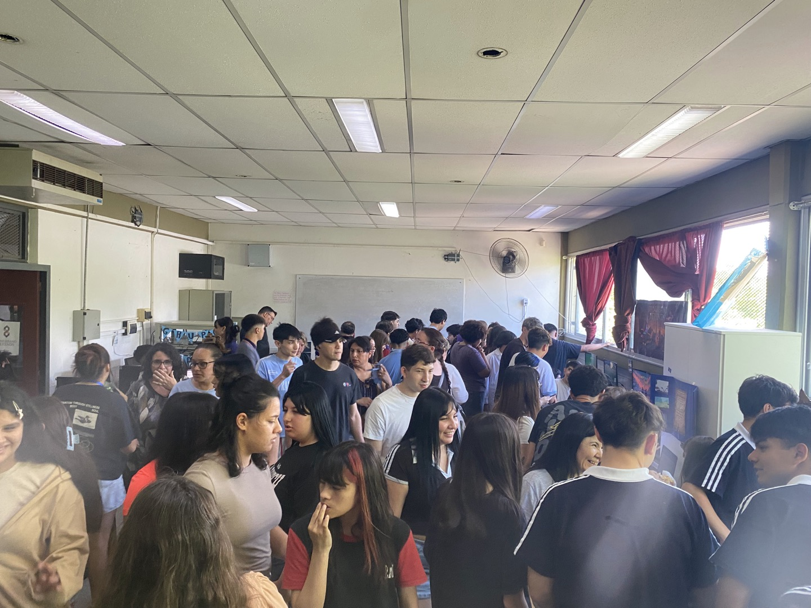
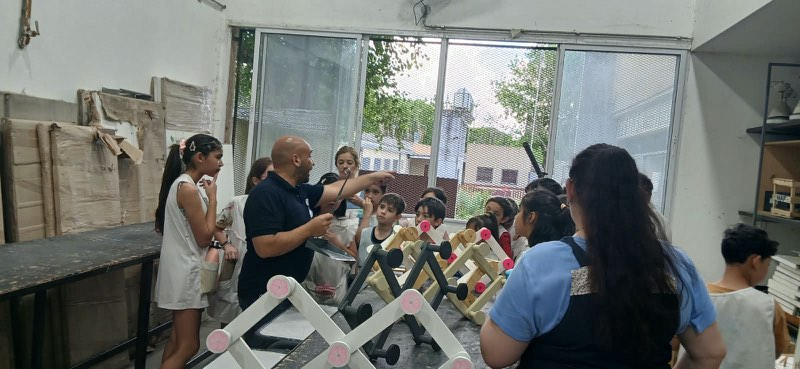
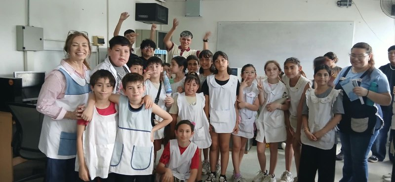
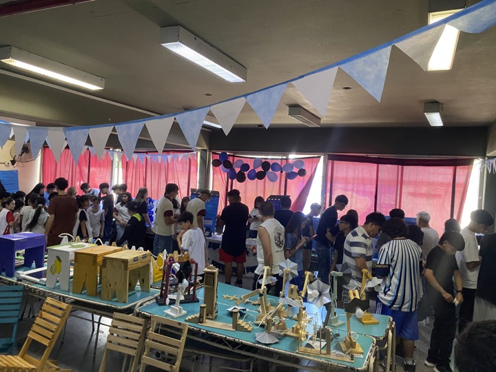
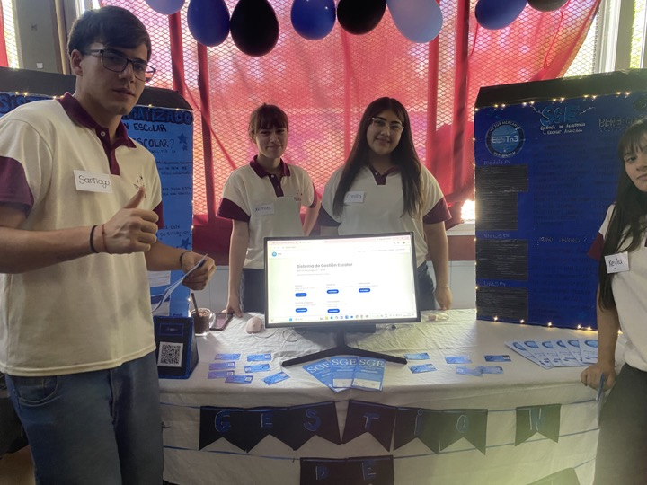
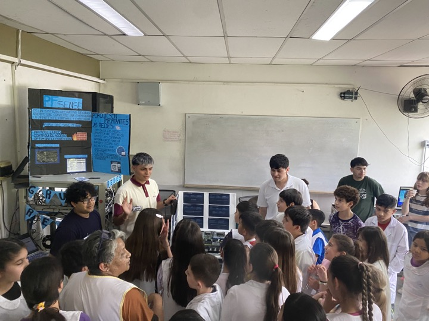
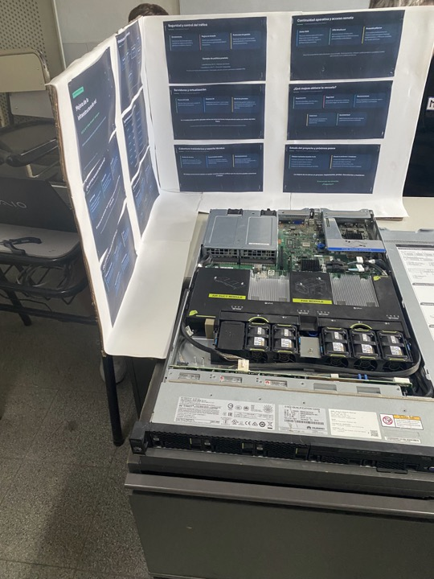
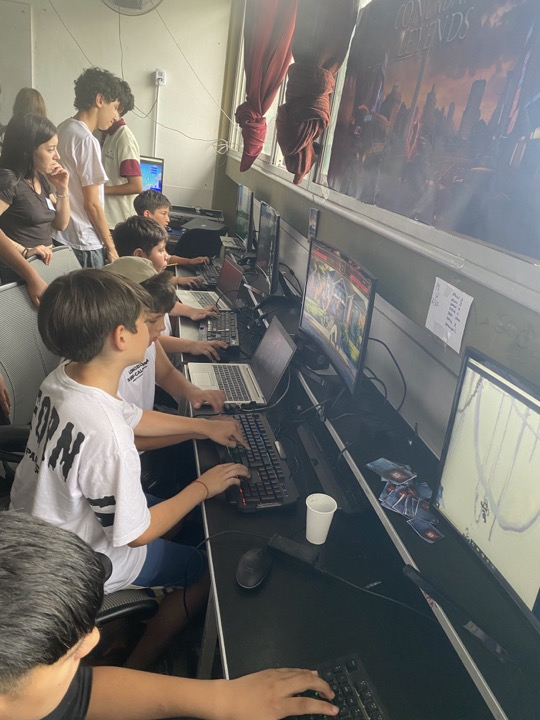
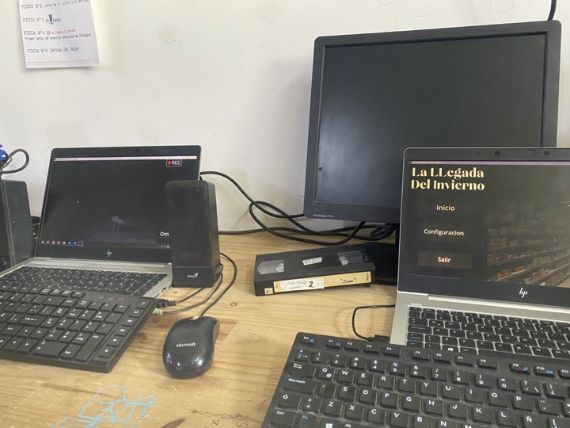
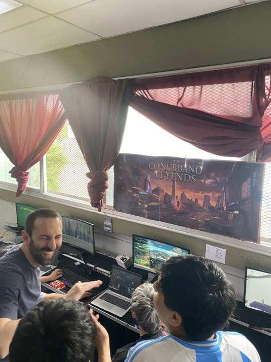

Galería /
Expo Técnica 2026
Los estudiantes de la Técnica 3 de Hurlingham compartieron sus proyectos con la comunidad.

El viernes 20 de noviembre, la Técnica 3 de Hurlingham abrió sus puertas para la Expo Técnica 2026. A lo largo de la jornada, los estudiantes presentaron sus proyectos y mostraron cómo funcionaban a quienes recorrieron los stands.
La muestra reunió maquetas, videojuegos, demostraciones de redes y una presentación del Sistema de Gestión Escolar. Los visitantes pudieron probar algunas propuestas en las computadoras y conversar con los equipos que las desarrollaron.
Diagnóstico y reparación de Windows en 4.º C
En el Laboratorio de Sistemas Operativos, estudiantes de 4.º C presentaron herramientas para detectar y reparar problemas de Windows. Mostraron cómo usar archivos .bat para agrupar comandos y automatizar tareas. En el stand también dejaron un código QR para consultar la presentación.

La Primaria N.º 30 visitó la Expo
Los chicos de la Escuela Primaria N.º 30 recorrieron los stands, se acercaron a una demostración con maquetas en el aula taller y visitaron el laboratorio de la Técnica 3.


La Expo en fotos






